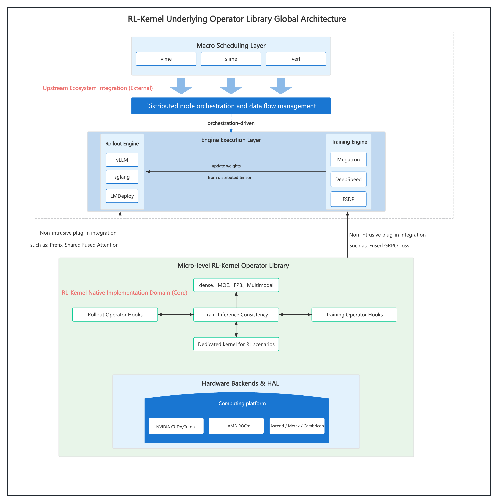
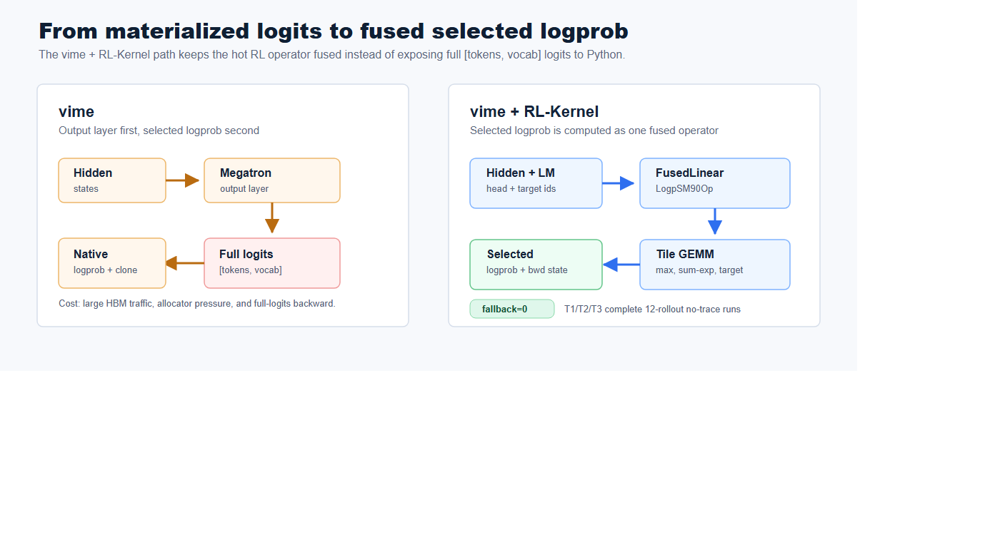
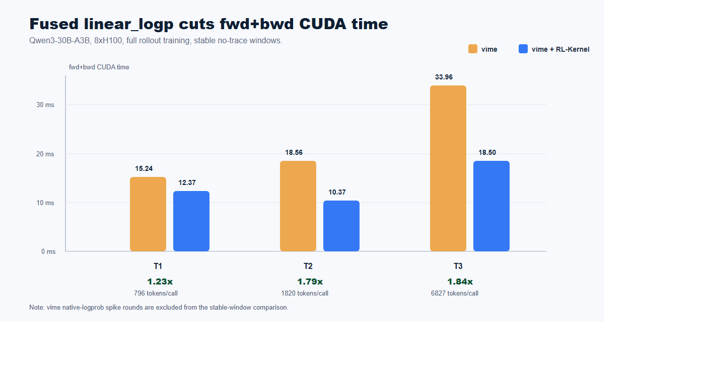
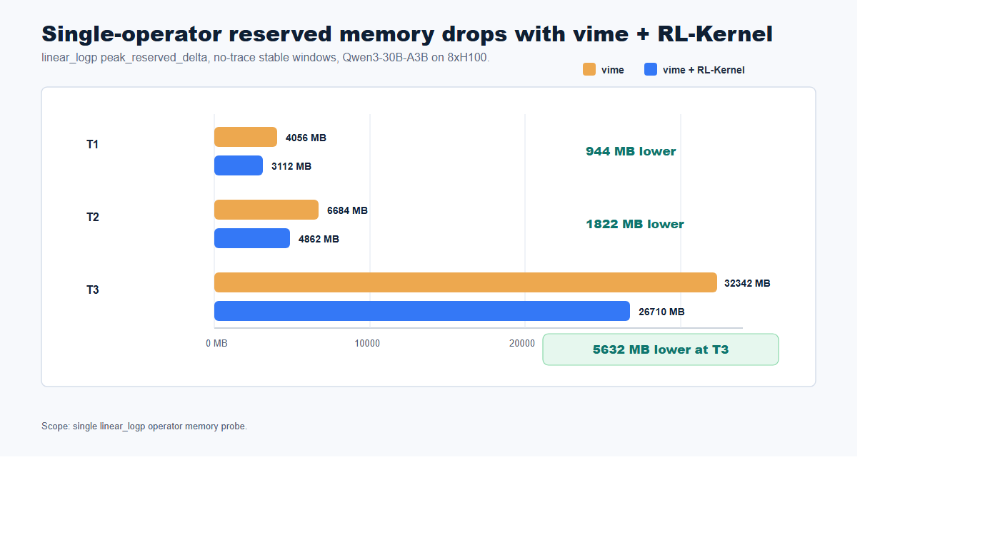

vime × RL-Kernel
RL-Kernel 性能探索：基于 vime 架构的首次融合算子实验
我们今天介绍 RL-Kernel 在 vime 中的 linear_logp 集成：这是一个面向 LLM RL post-training 的 fused operator path。它用 Hopper 优化的 CUDA 算子替换 vime 原生的 output layer + selected-logprob 路径，直接从 hidden states 和 LM head 权重计算 selected token log probability。
在 Qwen3-30B-A3B、8xH100 80GB、完整 vLLM rollout、Megatron training、TP=2、PP=1、CP=1、EP=8、12 轮 rollout 的设置下，vime + RL-Kernel 在 T1、T2、T3 三组配置中都稳定完成，fallback=0。在最大 no-trace 完整配置中，fused linear_logp 的 forward + backward CUDA 时间从 33.96 ms 降到 18.50 ms，约 1.84x；单算子 peak reserved delta 从 32342 MB 降到 26710 MB。
我们的愿景
RL post-training 越来越容易被训练、rollout 和框架层 tensor 物化之间的边界限制。vime 已经提供了清晰的训练和 rollout pipeline，把 Megatron training 与 vLLM generation 连接起来。RL-Kernel 关注的是更底层但同样关键的一层：决定完整 RL step 是否显存敏感、延迟敏感、数值可控的算子。
selected-logprob 路径就是一个典型例子。PPO、GRPO 以及相关算法最终只需要 selected tokens 的 log probabilities，但传统路径往往先物化完整 [tokens, vocab] logits，再调用 logprob 工具函数。对于大 vocab 的 MoE 模型，这个中间 tensor 会显著放大 HBM traffic 和 allocator pressure。
RL-Kernel 的目标是让这些 RL 专用算子成为一等基础设施：fused、可观测、tensor-parallel aware，并且可以在不重写上层编排系统的前提下接入生产式训练流程。
定位
vime 仍然是 RL framework 和 orchestration layer。它负责训练、rollout、权重同步、数据流以及算法级执行。RL-Kernel 位于其下方，作为 operator library 工作。
在这次集成中，vime 保持原有高层工作流：
- Megatron 负责训练侧。
- vLLM 负责 rollout 侧。
- vime 协调权重更新、样本、reward 和 train-rollout metrics。
- 当后端可用时，RL-Kernel 替换训练侧的 linear_logp hot path。
这种集成方式是非侵入式的。如果 fused operator path 没有开启，vime 仍然可以走原生 output layer 和原生 selected-logprob 实现。当 vime + RL-Kernel 命中 fast path 时，训练侧会避免为了 selected-logprob 计算而物化完整 logits。
RL-Kernel 的设计并不是用单一路径覆盖所有场景，而是让 operator path 可观测、可选择：已经验证过形状、硬件和精度组合时，可以走性能优先的 fast path；当任务更强调 rollout-training 一致性时，可以走 consistency-first path。这两个目标是互补的。本次实验验证的是 linear_logp fast path 在完整 vime 链路中的稳定性和收益，后续工作会在同样可观测的选择/fallback 机制下继续扩大一致性覆盖和性能覆盖。
架构概览
RL-Kernel 被设计为高层 RL orchestration 和底层 GPU backend 之间的 operator-layer bridge。它通过 custom operator hooks 接入 rollout engines 和 training engines，真正的 kernel 则由 CUDA、Triton、ROCm 以及相关后端实现。

对于 linear_logp，vime 集成路径如下：
- vime 从 Megatron model 中取出 LM head weight、TP group、本地 vocab 范围以及 global vocab size。
- 在 vime + RL-Kernel 训练侧 forward 中，vime 让 Megatron 返回 hidden states，而不是物化 logits。
- vime 将 hidden states、target token IDs 和 tensor-parallel metadata 传给 RL-Kernel。
- RL-Kernel dispatch FusedLinearLogpSM90Op，并命中 fused-tile bf16 full-gradient tensor-parallel fast path。
- CUDA extension 直接计算 selected logprob 和 backward 需要的状态，不把完整 [tokens, vocab] logits 暴露给 Python framework layer。

核心能力
Fused selected-logprob computation
在 forward 中，RL-Kernel 直接计算 log_softmax(hidden @ W^T)[target]，不在 framework layer 物化完整 logits。
SM90 tensor-parallel fast path
完成的 8xH100 run 均命中 Hopper 上的 fused-tile bf16 full-gradient tensor-parallel path。
Full-gradient support
主结果使用 TRAIN_SCOPE=full，覆盖相关 hidden 和 weight path 的梯度，而不是 output-layer-only shortcut。
Observable fallback behavior
每组完成的 vime + RL-Kernel run 都报告 fallback=0，确保发布数字来自 fused path。
vime-compatible execution
benchmark 使用完整 vLLM rollout 和 Megatron training，而不是 train-only microbenchmark。
验证与 Benchmark
主验证使用 Qwen3-30B-A3B、8xH100 80GB 和完整 rollout training。下面的正式指标都来自完整 12-rollout no-trace run。稳定统计窗口使用 rollout 3-11，避免 warmup 影响。
vime 路径是原生 Megatron output layer + 原生 selected-logprob computation。vime + RL-Kernel 路径是 FusedLinearLogpSM90Op 的 save-logits fused-tile full-gradient path。
Qwen3-30B-A3B on 8xH100
T1、T2、T3 中，vime 和 vime + RL-Kernel 都完成了 12 轮 rollout。vime + RL-Kernel run 命中：
Using RL-Kernel linear_logp op: FusedLinearLogpSM90Op
Using fused-tile bf16 full-gradient tensor-parallel linear_logp fast path.
并且 fallback=0。
Operator-level CUDA timing on Qwen3-30B-A3B across completed 8xH100 no-trace configurations.
| Config | Tokens/call | fwd CUDA vime | fwd CUDA vime + RL-Kernel | fwd speedup | fwd+bwd CUDA vime | fwd+bwd CUDA vime + RL-Kernel | fwd+bwd speedup |
|---|---|---|---|---|---|---|---|
| T1 | 796 | 5.14 ms | 3.51 ms | 1.46x | 15.24 ms | 12.37 ms | 1.23x |
| T2 | 1820 | 7.78 ms | 3.36 ms | 2.32x | 18.56 ms | 10.37 ms | 1.79x |
| T3 | 6827 | 14.52 ms | 7.62 ms | 1.91x | 33.96 ms | 18.50 ms | 1.84x |
最强的单算子结果来自 T3：forward + backward CUDA 时间从 33.96 ms 降到 18.50 ms。T2 的 forward-only speedup 最高，达到 2.32x。

单算子显存
显存对比同样使用 operator-level probe。这里统计的是 linear_logp 调用窗口内的 peak reserved delta。
Single-operator peak reserved memory delta around the linear_logp call.
| Config | reserved delta vime | reserved delta vime + RL-Kernel | single-op reserved saving |
|---|---|---|---|
| T1 | 4056 MB | 3112 MB | 944 MB |
| T2 | 6684 MB | 4862 MB | 1822 MB |
| T3 | 32342 MB | 26710 MB | 5632 MB |
T3 是最清晰的单算子显存结果：linear_logp operator window 内的 peak reserved delta 从 32342 MB 降到 26710 MB，节省 5632 MB。

端到端 Step Time 口径
linear_logp 单算子加速和显存下降。在最大 no-trace 稳定窗口中，full step time 从 232.20s 到 228.40s，约 1.6% 小幅改善；同一窗口里，full-run peak reserved 从 49.26GB 降到 46.23GB，减少约 3.03GB。由于完整 RL step 还包含 rollout、weight sync、TP/NCCL 通信和框架调度，我们不将本轮结果 claim 为显著 end-to-end step speedup。这是 vime + RL-Kernel 的第一阶段集成，后续会继续扩展到更多 RL hot path 和 communication-aware / TP-aware 算子，并补充更多端到端实验。
稳定性与健康信号
完成的 vime + RL-Kernel runs 保持了预期训练信号。loss 为 finite，reward 与 vime 同量级，train-rollout logprob difference 也保持在同一量级。
Training sanity metrics over the same stable rollout 3-11 window.
| Config | raw_reward vime | raw_reward vime + RL-Kernel | abs_diff vime | abs_diff vime + RL-Kernel | fallback |
|---|---|---|---|---|---|
| T1 | 0.0000 | 0.0000 | 0.02668 | 0.02537 | 0 |
| T2 | 0.0278 | 0.0278 | 0.02264 | 0.02395 | 0 |
| T3 | 0.1111 | 0.0972 | 0.02034 | 0.02224 | 0 |
表中沿用本文统一的 rollout 3-11 稳定窗口，关注可复现的单算子行为。
为什么 Fused Path 有收益
vime 原生路径是两段式：
hidden -> output_layer -> full logits -> selected logprob
vime + RL-Kernel 改变了 operator boundary：
hidden + lm_head_weight + target_ids -> selected logprob
这个变化有四点收益。
第一，vime + RL-Kernel 不再把完整 [tokens, vocab] logits 暴露为 framework-level forward intermediate。T3 中每次 call 覆盖约 6.8k packed tokens，因此移除这个 framework-level logits tensor 可以显著减少 memory traffic 和 allocator pressure。
第二，CUDA kernel 可以在 tiled GEMM 过程中同时维护 max、sum-exp 和 target-logit statistics，而不是等完整 logits matrix 生成后再进入 logprob 计算。
第三，tensor-parallel metadata 是显式的。RL-Kernel 接收 TP group、本地 vocab start index 和 global vocab size，使每个 rank 在本地 vocab shard 上工作，只合并 global selected logprob 所需的统计量。
第四，full-gradient backward 也进入更快的路径。RL-Kernel 在 CUDA/C++ 中组织 local/tiled logits/dlogits 和 linear-gradient 计算，用受控的 workspace 换取更少的 Python chunk loop、更少的小 matmul dispatch 和更低的 allocator 抖动。这个设计主要服务 latency；在实测的单算子窗口里，它的 peak reserved memory 仍然低于 vime 路径。
Roadmap
详细集成计划见 https://github.com/RL-Align/vime/issues/6。
RL-Kernel 和 vime 后续会沿着几个实际方向继续演进：
Consistency contracts
让 rollout-training dlogp、provenance、batch-invariance checks，以及 strict/audit modes 成为 vime 的一等诊断能力。
Fast-path expansion
只在 profiling 显示真实瓶颈的位置，把 contract-preserving RL-Kernel backends 从 linear_logp 扩展到更多路径。
Compute/communication decoupling
拆分 compute kernels、collective scheduling 和 overlap telemetry，让 TP/NCCL bottlenecks 可以被优化，同时不隐藏 numeric-contract changes。
Operator coverage
增加针对 logprob reference scoring、attention/reductions、matmul projections、normalization、embeddings 和 RL loss fragments 的路径。
Release discipline
保持 operator-level、actor-window 和 full-step claims 分离，并配套 structured fallback reporting 和可复现 benchmark slices。
快速开始
8xH100 benchmark 入口如下：
cd /workspace/vime
WORKSPACE_ROOT=/workspace \
VIME_PYTHON_ENV=/workspace/vime-rlk-env \
TRACE_MODE=none \
TRAIN_SCOPE=full \
scripts/benchmarks/run-qwen3-30B-A3B-8gpu-rlk-12rollout.sh T3 cuda
vime + RL-Kernel 的关键设置：
export VIME_RL_KERNEL=1
export VIME_RL_KERNEL_OPS=linear_logp
export VIME_RL_KERNEL_LINEAR_LOGP_BACKEND=cuda
export VIME_RL_KERNEL_CUDA_EVENT_TIMER=1
export VIME_RL_KERNEL_LINEAR_LOGP_DETACH_HIDDEN=0
export RL_KERNEL_LINEAR_LOGP_SAVE_PROBS_BF16=0
export RL_KERNEL_LINEAR_LOGP_FUSED_TILE_BWD_FULL=1
采集数据前，需要确认 RL-Kernel CUDA extension 暴露 SM90 forward/backward 符号，并在日志中确认 vime + RL-Kernel 命中 fused-tile fast path 且 fallback=0。
加入社区
RL-Kernel 是开源的 RL post-training operator infrastructure 项目。
- RL-Kernel code and docs：github.com/RL-Align/RL-Kernel
- vime code and docs：github.com/vllm-project/vime
- Feedback：欢迎提交 issue、PR、benchmark 结果和硬件报告。
如果你的大规模 RL post-training 任务遇到 selected-logprob 或 output-layer 显存压力，RL-Kernel 是一个值得优先检查的位置。
致谢
这项工作建立在 vime、vLLM、Megatron-LM、FlashInfer、DeepSpeed 以及更广泛的开源 RL infrastructure ecosystem 之上。感谢 vime 和 RL-Kernel contributors 在 8xH100 长跑验证、rollout 与 weight-sync path 调试、以及完整 no-trace benchmark 口径整理中的工作。